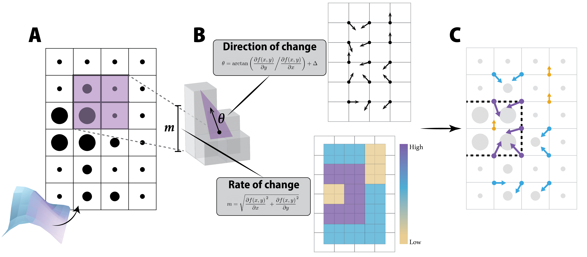

Introduction
Broadly the Wombling algorithm traverses a 'landscape' (for example species richness at different degree squares) and describes the the landscape in terms of the Rate of Change (m) (think slope/gradient) and Direction of Change (θ) (direction of slope). For a more in-depth overview you can refer to the preprint available at the following 10.32942/osf.io/sjxd8, otherwise follow along for a high-level overview is roughly outlined in the figure below.
Although the wombling algorithm (as implemented here) is designed to work with two-dimensional i.e. planar data (as delimited by $x$ and $y$), it is beneficial to view this plane as a three-dimensional object (or series of curves), as shown in panel A of the figure below. Here the 'amplitude' of the curvature of the plane is determined by the value of $z$ and the rate and direction of change is calculated by using the first-order partial derivative ($\partial$) of the surface (curve) as described by $f(x,y)$ (panel B). Using the rate of change it is also possible to identify candidate boundaries (dashed line in panel C) in the landscape that indicate 'shifts' from one state to another.

Both rate and direction of change are calculated by interpolating points in a given search window which (depending on how the points are arranged in space), and can be done in two ways.
Lattice Wombling: For points that are regularly arranged in space the search window is 2 × 2 points. Note that the wombled landscape will be will be smaller than the original landscape (A) due to the interpolation process i.e. where we originally had an $n \times r$ grid we now have an ($n$ - 1)($r$ - 1) sized grid.
Triangulation Wombling: For points that irregularly arranged in space nearest neigbours are found using delaunay triangualtion and interpolation is between 3 points.
In this example, we will see how the SpatialBoundaries.jl package works (as well as interpreting the rates and direction of change), by taking a random mid-point displacement landscape, and measuring its rate and direction of change.
using SpatialBoundaries
using NeutralLandscapes
using CairoMakieThe landscape generation is done using the NeutralLandscapes package, and we will pick a 500x500 grid:
landscape_size = (500, 500)
landscape = rand(MidpointDisplacement(0.75), landscape_size...)500×500 Matrix{Float64}:
0.674362 0.672667 0.681914 0.698075 … 0.406859 0.417211 0.422689
0.67079 0.674168 0.693035 0.686257 0.406512 0.409639 0.394976
0.664565 0.676149 0.690146 0.697328 0.386524 0.395292 0.382422
0.665744 0.66993 0.677124 0.672339 0.397852 0.389922 0.379407
0.665732 0.66814 0.660617 0.667889 0.388919 0.383229 0.379409
0.66184 0.654236 0.646182 0.650573 … 0.37234 0.372426 0.376616
0.654918 0.657361 0.645679 0.651873 0.361851 0.361713 0.359132
0.652338 0.636014 0.63663 0.642181 0.347828 0.350567 0.34852
0.643879 0.634711 0.628877 0.644969 0.32502 0.328914 0.332783
0.649591 0.640503 0.633876 0.641526 0.329396 0.319007 0.33681
⋮ ⋱
0.637356 0.634775 0.644722 0.635777 0.40468 0.416483 0.410654
0.637544 0.631301 0.638533 0.622622 0.401873 0.401102 0.394038
0.646883 0.644633 0.634123 0.636979 0.397327 0.409994 0.403516
0.653596 0.638732 0.629349 0.634774 0.389915 0.40517 0.404992
0.648905 0.643389 0.630689 0.643789 … 0.394489 0.386737 0.390985
0.643437 0.643749 0.644027 0.64615 0.384032 0.378174 0.384613
0.654687 0.639687 0.648198 0.653518 0.379351 0.379403 0.381147
0.643991 0.65015 0.661472 0.669151 0.373709 0.387331 0.385651
0.641739 0.654096 0.659278 0.663544 0.362034 0.377945 0.36726By default, lattice wombling will assume that the cells have the same size, which is 1/n (where n is the number of cells on each side), but you can specify your own x and y arguments.
We can take a quick peek at the landscape:
heatmap(landscape)Getting the lattice wombling is done with
W = wombling(landscape);The resulting LatticeWomble object has fields for the rate of change (m), the direction of change in degrees (θ), and the values of the centers of the cells at x and y (note that the grid of rates of change is one cell smaller than the original grid!). These points are in a grid so the Lattice Wombling function was used - note that wombling() will select the appropriate algorithm based on data input.
Let's have a look at the rate of change:
heatmap(W.m, colormap=:navia, colorrange=(0, maximum(W.m)))The rate of change informs us on the potential for there to be a boundary (zone of change) within a window. Cells with a high rate of change are indicative of large differences (changes) in the landscape 'topology' and are suggestive of a boundary as we shift from one 'state' to another.
The direction of change is also given, and is expressed a wind direction; for instance, an angle of 180° means that the value is smaller in the South, and larger in the North:
heatmap(W.θ, colormap=:romaO, colorrange=(0., 360.))The direction of change is not the direction the boundary would be if you were to draw it on the landscape but rather the direction the rate of change is 'moving in'. This means it is possible to think of and use the direction of change independently of calculating boundaries per se and can be used to inform how the landscape is behaving/changing in a more 'continuous' way as opposed to discrete zones/boundaries. For example if changes in species richness are more gradual (rate of change is near constant) but the direction of change is consistently South-North (i.e. 180°) we can still infer that species richness is 'uniformly' increasing in a South-North direction.
A note on outputs: The new $x$ and $y$ co-ordinates correspond to latitude and longitude respectively (which is the opposite of what one might expect).